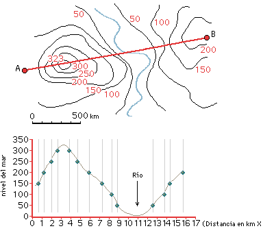

D. Perfil Topogràfic i Línia de Vista (Line-of-Sight)
Com generar el tall vertical del relleu entre dues estacions i verificar si el feix de telecomunicacions viatja lliure d'obstacles o si queda bloquejat per un cim intermedi.
Com s'Aixeca un Perfil Topogràfic?
Un perfil topogràfic és un tall transversal vertical del terreny al llarg d'una línia traçada entre dos punts A i B.
- Tall de corbes: Es col·loca una tira de paper mil·limetrat sobre el mapa unint el punt A i el punt B, i es marquen tots els punts on la línia talla una corba de nivell anotant-ne la cota.
- Eix d'altituds: Es projecta cada punt en un gràfic cartesià on l'eix horitzontal és la distància i el vertical és l'altitud en metres.
- Unió de punts: En unir els punts amb una línia contínua, obtenim la silueta exacta del relleu de la muntanya!

Mètode analògic d'enginyeria per aixecar un perfil topogràfic a partir del mapa de corbes.
Com es comuniquen les torres direccionals i per què cal Línia de Vista directa (LoS)?
Fonaments d'enginyeria de telecomunicacions en terrenys muntanyosos com Pocona (3r d'ESO)
Per connectar dues comunitats a quilòmetres de distància, les torres utilitzen antenes directives (com les parabòliques). A diferència d'una bombeta que il·lumina a tot arreu, aquestes antenes concentren tota l'energia en un feix estret i precís com un làser, apuntant directament d'antena a antena.
Les ones de telecomunicacions d'alta freqüència (microones WiMAX/Wi-Fi rural a 2,4 o 5 GHz) viatgen estrictament en línia recta. La terra, la roca i els arbres bloquegen i absorbeixen el 100% del senyal. No poden travessar muntanyes ni fer corbes per la vall. Cal visió òptica directa!
Quan el perfil topogràfic mostra que un turó bloqueja la línia de vista (LoS Bloquejat), l'equip d'enginyeria pot:
• Augmentar l'alçada del màstil de les torres per passar per sobre del cim.
• Reubicar la torre a un turó adjacent més alt.
• Instal·lar un repetidor intermedi al cim més alt per fer de pont entre les dues valls.
Comprova de manera interactiva la Línia de Vista (Line-of-Sight o LoS) entre dues torres de telecomunicacions amb antenes directives. Arrossega les torres sobre el mapa i observa en temps real el tall del relleu: si qualsevol cim andí talla el feix verd de ràdio, l'enllaç queda bloquejat fins que elevador els mastelers o busquis una posició lliure d'obstacles!
• 🟢 Feix Verd (LoS OK): Les dues antenes directives «es veuen» netament a través de l'aire sense que cap massa de roca o terra talli el feix concentrat. La transmissió de dades i telemedicina funciona al 100%.
• 🔴 Feix Vermell (LoS Bloquejat): Un cim o turó intermedi s'interposa en el camí directe. Com que les microones viatgen en línia recta i no travessen la muntanya, l'enllaç queda completament tallat (0% de senyal).
Missió Tècnica: Reptes de Línia de Vista (LoS)
Configura les torres per superar els obstacles del terreny andí!
Amb les posicions de les dues torres que hi ha al mapa, el feix de ràdio queda tallat pel relleu. Modifica l'alçada dels mastelers (Torre A i Torre B) o mou les torres lleugerament fins que obtinguis 🟢 Línia de Vista Neta (LoS OK).
Observa la casella «Desnivell (Δh)» a la barra de lectures superior. Quin valor indica actualment entre la base de la Torre A i la Torre B?
Si entre l'ambulatori i l'escola hi ha una muntanya molt alta que requeriria una torre de més de 100 metres (inviable econòmicament i estructuralment), quina és la solució estàndard de cooperació?